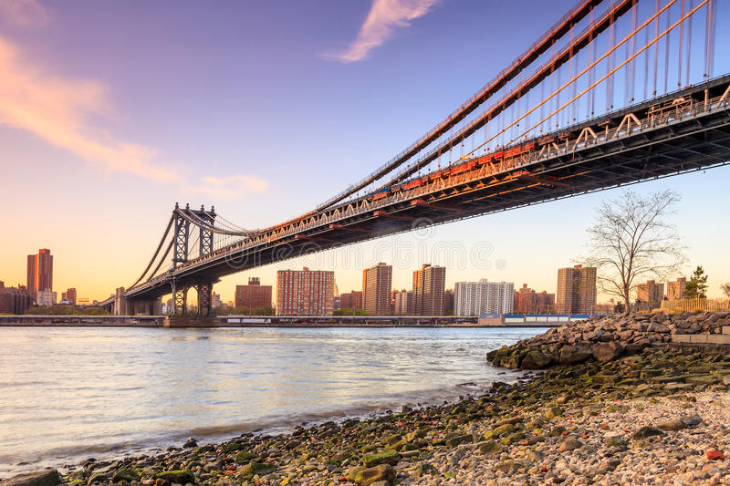

New York ligger vid Hudsonflodens utflöde i Atlanten i nordöstra USA och är landets största stad med 8,4 miljoner invånare (2018). New York omfattar fem stadsdelar: Manhattan, Bronx, Brooklyn, Queens samt Richmond på ön Staten Island. Varje stadsdel är lika stor som en europeisk storstad. Det var den holländske guvernören för kolonin Nya Nederland som köpte ön Manhattan av indianerna för ca 100 kronors värde i prydnadssaker och en flaska brännvin. 1664 erövrade engelsmännen kolonin och ändrade namnet till New York. York är namnet på en gammal engelsk stad.

Den 4 juli 1886 invigdes Frihetsgudinnan (Statue of Liberty) i New York. Frihetsgudinnan som står vid infarten till stadens hamn är 46 meter hög. Frihetsgudinnan, som symboliserar USA:s självständighet, var en gåva till USA från det franska folket vid amerikanska oavhängighetsförklaringens hundraårsminne. Statyn har genom åren även kommit att symbolisera frihet och demokrati.

Empire State Building är en skyskrapa och kontorsbyggnad i korsningen Fifth Avenue och 34th West Street på Manhattan i New York. Den började uppföras 1929 och invigdes den 1 maj 1931. Byggnaden har 102 våningar och är 381 meter hög (449 meter inklusive tornspira och radiomast). Namnet kommer från smeknamnet på staten New York som kallas The Empire State. Empire State Building var världens högsta byggnad i 39 år, tills World Trade Centers norra torn nådde sin maxhöjd utan antennen 1970. Sedan 11 september 2001, då World Trade Center förstördes i en terroristattack, blev Empire State Building återigen New Yorks högsta byggnad. Den 30 april 2012 nådde dock One World Trade Center samma höjd och blev högre efter det. Även bostadshuset och hotellet 432 Park Avenue har blivit högre.
Manhattan Bridge är den mellersta av de tre broarna som går mellan Manhattan och Brooklyn i New York. De övriga två är Brooklyn Bridge och Williamsburg Bridge. Manhattan Bridge är en hängbro som går över East River i New York City mellan Nedre Manhattan (vid Canal Street) och Brooklyn (vid Flatbush Avenue Extension). Bron öppnades den 31 december 1909 och designades och byggdes av den polske broingenjören Ralph Modjeski.